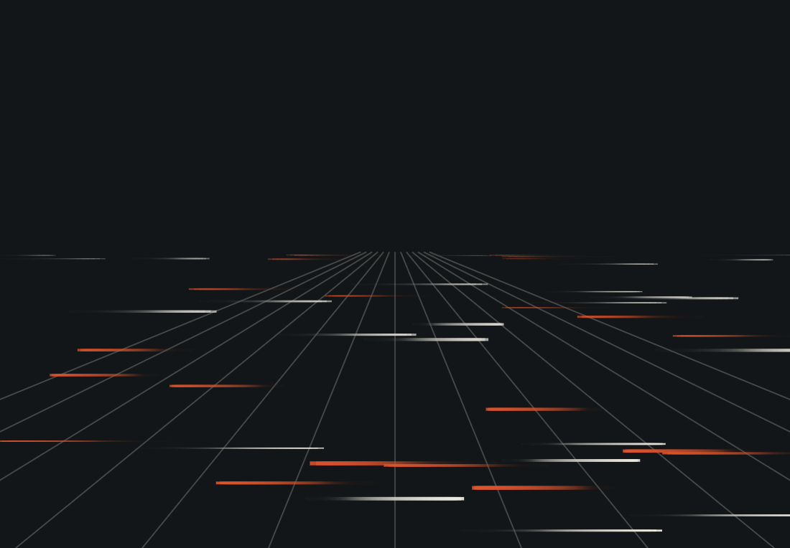
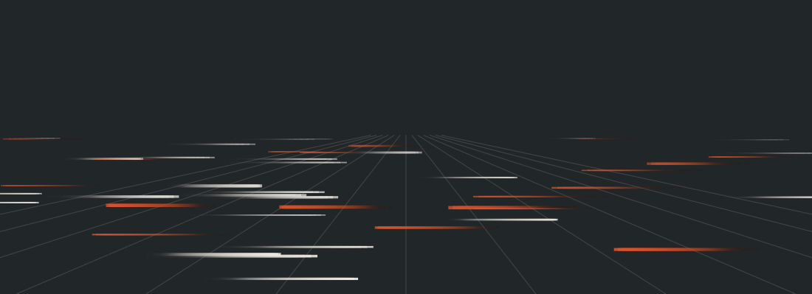

Know where every crash happens—precisely. Reports from the RoadReport app, verified by administrators and answered by traffic officers across Bulacan.
A tricycle on a barangay road, a jeepney on the highway: every crash deserves a record that is complete, verified and acted on. RoadReport gives Bulacan’s administrators one place to do that.
Public users send details, photos and the GPS location from the RoadReport app for Android.
Check new reports, ask for missing details, mark duplicates and confirm against official records.
Verified reports go to officers who update the status and add findings in the same mobile app.
See which towns and highway stretches have the most accidents, built from real reports.
Daily to annual summaries with CSV and PDF downloads for councils, offices and agencies.
The dashboard turns verified reports into a ranked view of where crashes cluster, so patrols, signage and road fixes go where they matter first.

Scroll to start logging reports…
Just verified incidents, delivered with accountability.
Check new reports, ask for missing details, mark duplicates, verify official records.
Give verified reports to traffic officers, who update the status and add findings.
Dashboard, accident-prone areas, summaries, and CSV and PDF downloads.
Saw an accident? Report it with the RoadReport app for Android. Public users send reports, photos and GPS location there. This website is for administrators only. In an emergency, call 911 first.

Make real progress with data you can verify, assign, and act on.
Log in to the admin portal